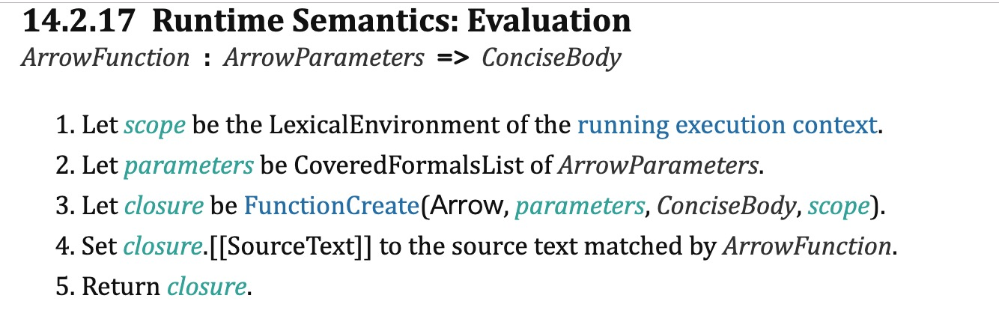
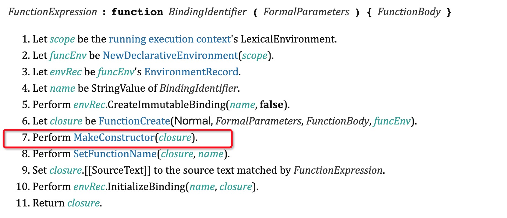

箭头函数作为ECMAScript中特殊的一种函数，和普通函数相比，有很多不一样的特点，本文将从规范的角度理解，看规范是如何定义的，导致箭头函数和普通函数有这么些不一样
箭头函数的特点
本身没有this值
1
2
3
4
5
6
7
8this.c = 'global'
var a = {
b: () => {
console.log(this.c)
},
c: 'c'
}
a.b() // global不能用作构造函数
1
new a.b() // Uncaught TypeError: a.b is not a constructor
bind，call，apply都不能改变函数运行时的this指向
1
2
3
4var d = { c: 'd'}
a.b.bind(d)() // global
a.b.apply(d) // global
a.b.call(d) // global没有arguments、prototype对象
1
2
3a.b.prototype // undefined
a.b = () => {console.log(arguments)}
a.b() // Uncaught ReferenceError: arguments is not defined
规范中的定义
- 箭头函数的声明，大概简化过程如下
- 执行FunctionCreate(Arrow, parameters, ConciseBody, scope),FunctionCreate最终是执行FunctionAllocate和FunctionInitialize
- FunctionAllocate(prototype, functionkind)
- 创建一个ecma函数对象F，F.[[Prototype]] to functionPrototype.
- 初始化了F.[Call]属性。
- 返回 F
- FunctionInitialize(F, kind, ParameterList, Body, Scope).
- 因为传入的kind是Arrow，所以 F.[[ThisMode]] 设置为 lexical.普通函数的是 F.[[ThisMode]] to global
- 注意并没有像普通函数的声明那样会执行MakeConstructor方法
特点解释
没有this值
首先需要知道this值是什么，我之前的文章ECMAScript2016规范理解（1）-this有介绍过this的定义和函数执行时是怎么获取this值的，其中给当前词法记录项中绑定this值的步骤是ordinarycallbindthis。其中有一句If thisMode is lexical, return NormalCompletion(undefined)。箭头函数初始化的时候，就是把F.[[ThisMode]] 设置为 lexical，所以会返回undefined，最终箭头函数的函数执行环境里this值是undefined。而在函数执行到this表达式的时候，发现是当前词法环境记录项里是undefined，所以会沿着执行环上下文堆栈向上找，最终会找到global环境下的this。
不能用作构造函数
- 对比普通函数的声明过程和箭头函数的声明过程就可以发现，箭头函数没有执行
MakeConstructor方法。而MakeConstructor方法的就是给函数初始化F.[[Construct]]属性以及prototype属性，所以箭头函数不可以被用作构造函数


bind，call，apply都不能改变函数运行时的this指向
- 首先需要了解，bind，call，apply执行时都干了些啥
没有arguments和prototype对象
没有prototype对象是因为没有执行MakeConstructor方法，而arguments对象是在执行函数时确定的，FunctionDeclarationInstantiation的执行过程中，如果[[ThisMode]] is lexical那么将不会初始化arguments对象